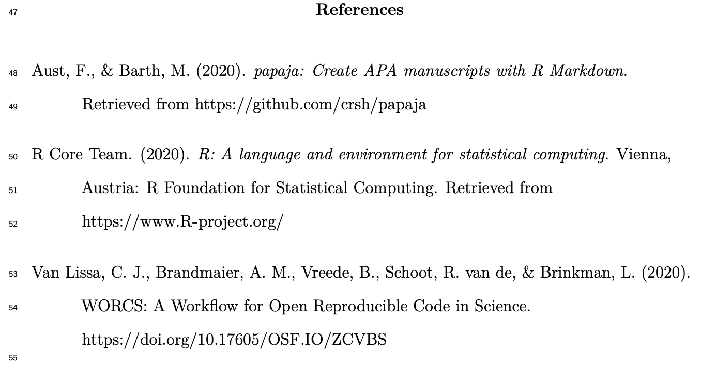
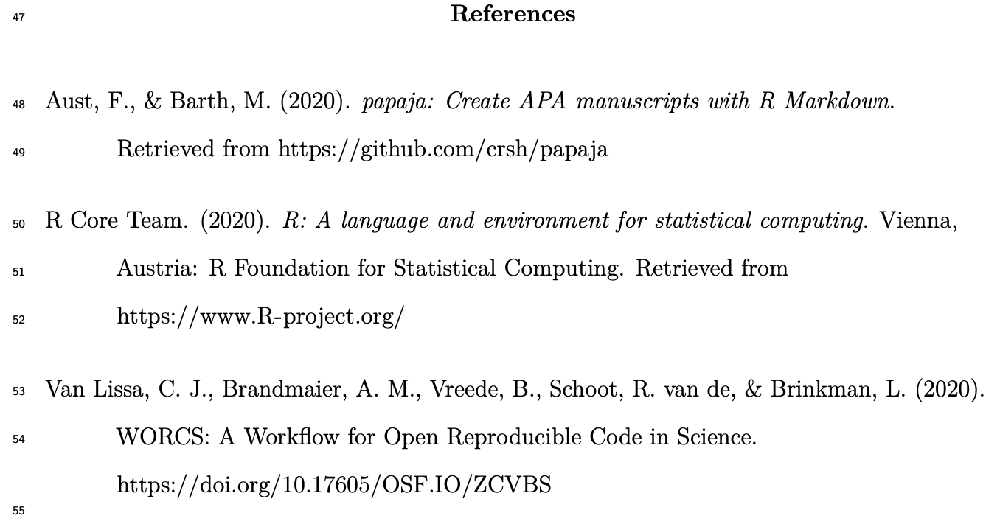
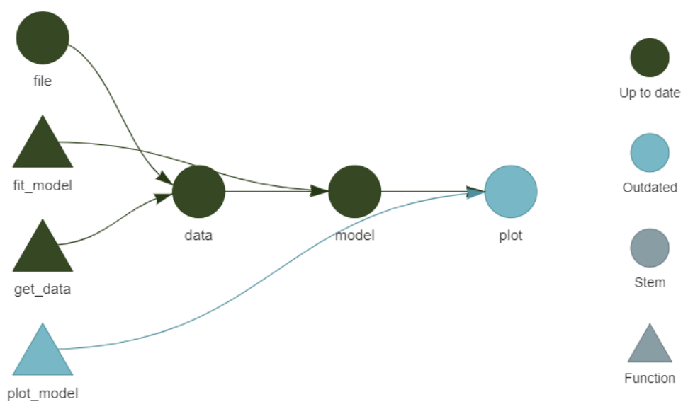

WORCS: A Workflow for Open Reproducible Code in Science
Caspar J. Van Lissa, Brandmaier, Brinkman, Lamprecht, Peikert, Struiksma, & Vreede (2021),
Data Science, DOI: 10.3233/DS-210031
Data Science, DOI: 10.3233/DS-210031
Today
- 09:30 - 10:40 1:10 Introduction to WORCS
- 25m Intro presentation
- 10m questions
- 25m Demo creating worcs project
- 10m questions
- 10:40 - 11:00 0:20 Coffee break
- 10:50 - 12:30 1:40 DIY: Setting up a WORCS project
- run check_worcs_installation(), debug
- create project
- add some analyses
- try to reproduce it
- 12:30 - 13:30 1:00 Lunch break
- 13:30 - 14:00 0:30 Integration testing, or: Reproducing in the cloud
- 10m presentation
- 20m demo
- 10m presentation
- 14:00 - 14:45 0:45 DIY: Setting up WORCS GitHub actions
- 14:45 - 15:00 0:15 Break
- 15:00 - 15:45 0:45 WORCS with targets: Sustainable reproducibility
- 10m presentation
- 20m demo
- 15m questions
- 15:45 - 16:30 0:45 DIY: Setting up WORCS with targets
Defining Open Science
“Open science is just good science” (Jonathan Tennant, 2018)
Formal definitions:
- TOP guidelines (Nosek et al., 2015)
- FAIR principles (Wilkinson et al., 2016)
Meeting TOP guidelines…
Relevant to openness and reproducibility:
- Citation of literature, data, materials, and methods;
- Sharing data;
- Sharing the code required to reproduce analyses;
- Sharing new research materials;
- Sharing details of the design and analysis;
- Pre-registration of studies before data collection;
- Pre-registration of the analysis plan;
- Replication of published results.
…in a FAIR manner
- Findable
- Via standardized repositories and search engines
- With Digital Object Identifier (DOI)
- Accessible online for humans and machines
- Long-term storage
- Interoperable
- Open file type
- Reusability
- License data, code, and materials for reuse
Why open science?
Sterling, 1959:

Why open science?
- Scientific fraud (Levelt, Noort, & Drenth, 2012)
- Questionable research practices (John, Loewenstein, & Prelec, 2012)
- P-hacking / p-ritual (Gigerenzer, 2018)
- Replication crisis (Shrout & Rodgers, 2018)
So: Open science as punishment for bad science?
Open science as a paradigm shift
Open Science creates opportunities to make science more
- reliable,
- cumulative,
- collaborative,
- inclusive
Why Reproducibility?
- Every analysis has “inductive bias” (Sterkenburg and Grünwald 2021)
- What we learn from the data depends, in part, on how we analyze it
- Implicit steps in the analysis make inductive bias intractable (Peikert 2023)
- We don’t know how, or how much, they influenced our results
- Reproducibility makes inductive bias tractable
- Reproducible code enables quantifying and studying inductive bias
- Ideally, your whole analysis is a sealed “pipeline”: data in, results out
- Multiverse analysis: conducting a study of the impact of all “reasonable” analysis decisions on the estimand/conclusion (Steegen et al. 2016)
- Reproducibility -> Scalability
- Apply same method in new study
- Redo analysis when new data come in
- Incorporate analysis into application for stakeholders, etc
Reproducibility is Challenging
Where do you start?
What tools do you need to learn?
What workflow is right for you?
Introducing WORCS
Workflow for Open Reproducible Code in Science
- Standardized workflow
- Low threshold, high ceiling
- Conceptual platform-independent principles
Van Lissa et al. (2021) - “One-click” solution for R-users:
https://cran.r-project.org/package=worcs - Defaults based on best practices (several experts contributed)
- Compatible with journal/university requirements and other workflows
- Pulling down the learning curve!
The tools
1. Dynamic document generation
2. Version control
3. Dependency management
1. Dynamic document generation
- Paper consists of text and code
- Results, figures, and tables automatically generated
- Formatted as APA paper (including citations!)

Important because:
- Save time from copy-pasting output and formatting paper
- Eliminate human error in copying results;
- When revising the paper, all results are automatically updated;
- Reproducible by default: Just generate the document
R Markdown example

R Markdown example rendered
 

2. Version control (using Git)
Why version control?
NO MORE manuscript_final_final_SERIOUSLYFINAL.doc
“Track Changes” on steroids: record entire project history
If something breaks, you can figure out what happened.
Facilitates collaboration and experimentation!

2. Version control (using Git)

Tracks changes to (text-based) files line by line:
- add files to your repository
- commit changes to these files
- push all commits to remote repository (private backup or public online supplement)

One command in worcs: git_update("Describe your changes")
Image credit: Software Carpentries
Introducing GitHub
worcsrepository is backed up in a remote repository like GitHub;GitHub is a “cloud backup” with “social networking” features
- Clone other people’s repository to reproduce or build upon them
- Open Issues with questions or comments about the work
- Send suggested changes as a “Pull request”
GitHub can be used to ‘tag’ specific states of the repository, e.g. a preregistration.

Important because:
- Complete backup of entire project history
- Go back to previous version if you want
- Try new things, don’t worry about losing work
- Prove that you preregistered your plans and followed them
- Easy collaboration online (even with strangers)
- People can copy your project and build on it
- GitHub can be your preregistration, your research archive, supplementary materials, comments section, etc.
- Connects to OSF.io project page
- Improves Findability
- Get DOI for project and/or specific resources
- Connects to Zenodo
- Get DOI for project and/or specific resources
- Store project snapshot
3. Dependency management
- To make project reproducible, people must have access to your (exact) software dependencies
- For R-users, these are
R-packages
- For R-users, these are
- Difficult trade-off:

Dependency management in WORCS
- Maintains text-based list of packages, their version,
and origin (e.g., “CRAN”, “Bioconductor”, “GitHub”) - This list can be version-controlled with Git;
- When a user loads the project,
renvinstalls all dependencies from the list
Important because:
- Essential for reproducibility
- Good for collaboration (everybody has same versions)
- Nice to your “future self”: Your code will work in the future

Unique features in worcs
- RStudio template
- Automatic installation check:
check_worcs_installation() - Easy GitHub integration
- Add URL during project creation
git_update("Commit message")- Automatically reproduce results in the cloud!
- Manuscript and preregistration templates
- From
rticles,papaja, andprereg - Original templates for secondary- and longitudinal data
- From
- Data sharing solutions
- Cite
@essentialand@@nonessential - Integration with
targets - WORCS checklist and badge
Sharing data in WORCS
- Reproducibility requires open data
- Some data may be (privacy) sensitive
- E.g., children’s data, veterans’ data, patient data
Use open_data():
- Original data made public
- Default is a
.csv(text based, human / machine readable) - Other save / load functions can be used
Use closed_data():
- Original data saved locally;
- Synthetic data created using
synthetic() - Synthetic data made public (default:
.csv) - Unique ID of original data made public (so people can audit your work)
Sharing data in WORCS
Loading data load_data():
- If original data are present, load them…
- …Else, load synthetic data
- Scripts can thus ALWAYS be reproduced
- People can create a working script using synthetic data, and send it to you to run on original data
- Load function recorded in
.worcsfile; defaultread.csv()
Reproducing WORCS Project
- Create entry point (e.g.,
manuscript.Rmd) - Define recipe (e.g.,
rmarkdown::render("manuscript.Rmd")) - Snapshot endpoints recipe (e.g.,
manuscript.pdf,table1.csv)
worcs::reproduce() generates the endpoints from the entry point via the recipe
worcs::check_endpoints() verifies that the results are identical
For non-R-users
- WORCS-paper addresses the conceptual workflow
- Covers issues/decisions you have to consider for Open Science, regardless of software
worcsis a good starting point for new R-users- Setup Tutorial to help install everything
- Tricky issues (like project management and using Git) are ~automatic when using the WORCS template
- Automatic check in case you get stuck:
check_worcs_installation()
- Learn good habits from the start; don’t reinvent the wheel
Find out more:
Integration testing
Reproducing in the cloud
What is Integration Testing?
Definition: Software engineering practice where (new) code is subjected to tests to ensure correct functioning and catch mistakes.
Integration Testing Research Code
We can apply integration testing to ensure that:
- Analyses work as expected
- Results are reproducible upon repeated execution
- And on different systems
What to Test?
- Final Document: If the final document is exactly reproducible, then all preceding steps should be too
- Data (after processing): Ensure that data are loaded and processed correctly
- Analysis results: Test that models provide correct results
- Tables and Figures: Ensure that output (tables, figures) are correct
Good Practices for Integration Testing
- Test incrementally: Avoid only testing at the end; test every small step.
- Automate tests: To run them frequently (e.g., after Git commit).
- Use real data: Apply your test to messy real data
- Use fake data: Apply your test to predictable fake data, to check that the outcome is as expected (e.g., during preregistration)
Integration Testing and Reproducibility
WORCS facilitates making analyses reproducible; integration tests verify reproducibility
Why: Increase trust in scientific findings by verifying that the study yields the reported results
Some journals now have “reproducibility editors” who perform these checks (e.g., Research Synthesis Methods)
Integration Testing in WORCS
worcs provides functionality for integration testing research code
Key Concepts: Define an entry point, endpoint(s), and a recipe to get from the entry point to the endpoint(s).
- Example:
- Entry point:
manuscript.Rmd - Endpoint:
manuscript.pdf - Recipe:
rmarkdown::render("manuscript.Rmd")
- Entry point:
Relevant functions
- Entry point is set by default when project is created
add_recipe()to customize recipeadd_endpoint()to start tracking files as endpointssnapshot_endpoints()to update state of endpoints- Uses checksums
reproduce()runs the recipe to reproduce the projectcheck_endpoints()verifies that endpoints remain unchanged afterreproduce()
GitHub Actions
Introduction to GitHub Actions
GitHub Actions is a continuous integration platform that allows you to:
- Automatically perform actions when your repository changes
- For software: Build and test every commit
- For research: Reproduce and check endpoints!
Components of GitHub Actions
- Virtual Machines: A user-configurable “computer” that runs the action (Linux, Windows, macOS)
- Workflows: The actions to be automated (e.g., check reproducibility)
- Events trigger workflows (e.g., a commit)
Default Specifications
- Virtual Machine: Latest Ubuntu Linux machine
- Workflow: Install pandoc (for PDF), R, and the Renv package dependencies, run
reproduce()orcheck_endpoints() - Events: Push to repository, and pull requests
You can add a reproducibility status badge to your README.md
Benefits of Automating Reproducibility
- Ensures that breaking changes in the analysis pipeline are detected and flagged
- Ensures that analyses reproduce on another system
¯\_(ツ)_/¯
"It works on my machine"- Increased rigor
- Reproducibility badge signals good practices
Reproducibility Checks via GitHub Actions
GitHub Actions can automate reproducibility checks by:
github_action_reproduce():- Reproducing the entire analysis remotely, then checking the endpoints
github_action_check_endpoints()- Just checking that the endpoints remain unchanged
GitHub Actions
worcs::reproduce() on GitHub via GitHub Actions:
What if my Test Fails?
Sometimes it SHOULD fail: if your analysis has changed
Sometimes it should NOT fail
- But you forgot to set a random seed
- But you performed a step interactively that is not part of your analysis pipeline (e.g., non-linearly step through code)
- Data has changed
- Analysis interacts differently with different collaborators’ systems (Linux vs Windows)
- Package versions are not correct (
renv::snapshot()andrenv::restore()) - Etc.
Combining worcs with targets
Redundant Computation
Making projects reproducible often involves frequently re-running code to ensure results are still valid.
- Issue: Re-running unchanged code is redundant and time-consuming
- Environmental Impact: Unnecessary computation increases carbon footprint (Gupta et al. 2021)
- Some analyses take minutes, hours, or days
- When you make a small formatting change to your Rmarkdown, you don’t want to re-run all analyses
What is targets
A “pipeline tool” for (computationally demanding) R-projects
- Each step is only re-run if:
- The step changed
- Its inputs changed
- Utilizes implicit parallel computing.
- Tracks both R-objects and output files
This does not overlap with, but perfectly complements, worcs workflows
Pipeline tools
Any pipeline tools does the following:
- Monitor dependencies of code chunks/functions
- Generates a so-called “dependency graph”, which shows the flow of information through processing steps (functions) in your project
- Skip chunks whose code or inputs remain changed
The most famous pipeline tool is the general purpose GNU Make
targetsis an R-exclusive pipeline tool
What Changes with Targets?
- Every step in your pipeline becomes a function
- The arguments of that function indicate what inputs the function listens to
- The package looks for changes to the function and its inputs to determine if it should be run
- Encourages a clean, function-oriented programming style.
- Helps researchers manage complex data analyses
- Makes code chunks more portable (i.e., reusable in other projects)
Example Pipeline
Targets in worcs
To use targets in a WORCS project:
- Select “Use Targets” in the project creation dialog.
- Define the pipeline in the
_targets.Rscript.
- Define the pipeline in the
- Select “Target Markdown” as output format in project creation dialog
- Define the pipeline in the
manuscript.rmdfile
- Define the pipeline in the
- Use
worcs::add_targets()
A targets workflow is executed by running targets::tar_make()
worcssets the recipe totargets::tar_make(), soworcs::reproduce()also executes the pipelineworcsmakes sure that the last step of the pipeline is to render an Rmarkdown to report the results
Loading Results in Rmarkdown
Results from the pipeline can be loaded into an Rmarkdown document using: - targets::tar_load(result_name) - targets::tar_load_everything()
This integrates the pipeline results into your dynamic document.
Often, rendering the Rmarkdown document will be the final step of your pipeline
Alernatively: targets Markdown
You can run targets directly within an Rmarkdown file by:
- Selecting “target_markdown” during project creation.
- Manually incorporating a pipeline in other Rmarkdown templates
Warning: Running code interactively in combination with tar_make() may introduce bugs. It is safer to only use tar_make().
References
Gupta, Udit, Young Geun Kim, Sylvia Lee, Jordan Tse, Hsien-Hsin S. Lee, Gu-Yeon Wei, David Brooks, and Carole-Jean Wu. 2021. “Chasing Carbon: The Elusive Environmental Footprint of Computing.” In 2021 IEEE International Symposium on High-Performance Computer Architecture (HPCA), 854–67. https://doi.org/10.1109/HPCA51647.2021.00076.
Peikert, Aaron. 2023. “Towards Transparency and Open Science.” doctoralThesis, Humboldt-Universität zu Berlin. https://doi.org/10.18452/27056.
Steegen, Sara, Francis Tuerlinckx, Andrew Gelman, and Wolf Vanpaemel. 2016. “Increasing Transparency Through a Multiverse Analysis.” Perspectives on Psychological Science 11 (5): 702–12. https://doi.org/10.1177/1745691616658637.
Sterkenburg, Tom F., and Peter D. Grünwald. 2021. “The No-Free-Lunch Theorems of Supervised Learning.” Synthese 199 (3-4): 9979–10015. https://doi.org/10.1007/s11229-021-03233-1.
Van Lissa, Caspar J., Andreas M. Brandmaier, Loek Brinkman, Anna-Lena Lamprecht, Aaron Peikert, Marijn E. Struiksma, and Barbara M. I. Vreede. 2021. “WORCS: A Workflow for Open Reproducible Code in Science.” Data Science 4 (1): 29–49. https://doi.org/10.3233/DS-210031.